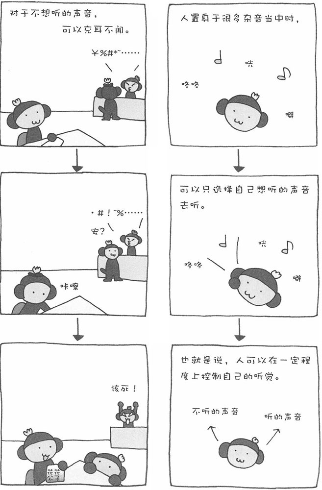

声音其实就是空气的震动，而人的耳朵就是捕捉空气震动并将其转换为神经信号的感觉器官。我们的大脑将耳朵传递来的神经信号进行处理，让我们理解其中的含义。在我们生活的世界中，充满了各种各样的声音。不过，我们的听觉具有一种优秀的能力，那就是能从纷繁的声音中选择自己需要的声音去听。例如，在嘈杂的小酒馆里，充斥着各种声音，有高声暄哗、有低声私语、有推杯换盏、也有划拳行令……不过，我们只听自己感兴趣的声音，不感兴趣的则充耳不闻。这就是所谓的"鸡尾酒会效应"。
如果在酒会现场进行录音，事后播放录音时，我们只能听到客人们嬉笑怒骂的声音、咳嗽声、碰杯声、空调声以及偶尔一两句模糊不清的对话声，而很难从录音中清晰地听到人们连贯的对话。可是，如果在现场，人的耳朵可以选择自己想听的声音去听，并阻断其他无用的"噪音"这就说明我们的耳朵具有选择能力。
此外，声音还有一种有趣的特性。不知您是否有过以下类似的经历：在公司的大办公室里，当空调开着的时候，也许我们并没有留意到其他声音；然而，在空调突然关闭的瞬间，也许我们会听到时钟秒针转动时发出的微弱声音，或是会议室中同事说话的声音。这种现象说明，有空调的声音时，我们很难听到其他声音。这也被称为"掩蔽效应"。
以前，很多公司为了隔音，会在办公室的墙壁上进行隔音处理。现在，很多公司已经不再采用这种措施了，而是制造出一些类似空调声响的"背景声响"。这样一来，即使会议室中讨论的内容需要保密，也不用担心被外面的人听到了。这就是利用声音掩蔽效应的一个例子。因此，有时美妙的BGM（背景音乐）并不单纯是为了让环境更加舒适而播放的，也许另有企图，正是为了遮蔽某种声音。
